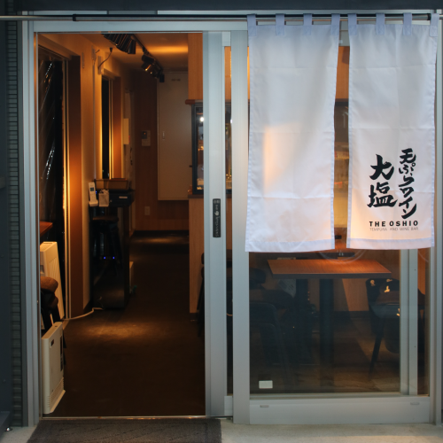

東京エリア
有楽町店
東京都千代田区丸の内3-7-9
TEL 03-6269-9154営業時間・定休日
- 月・火・木・土・祝前日
- 17:30 - 22:30（L.O. 料理21:30 ドリンク22:00）
- 水
- 17:30 - 22:30（L.O. 料理22:30 ドリンク22:00）
- 金
- 17:30 - 23:30（L.O. 料理22:30 ドリンク23:00）
- 日・祝日
- 17:30 - 22:00（L.O. 料理21:00 ドリンク21:30）
- 定休日
- なし